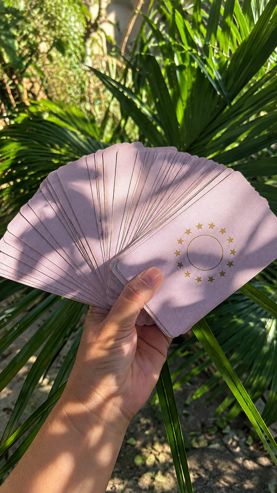
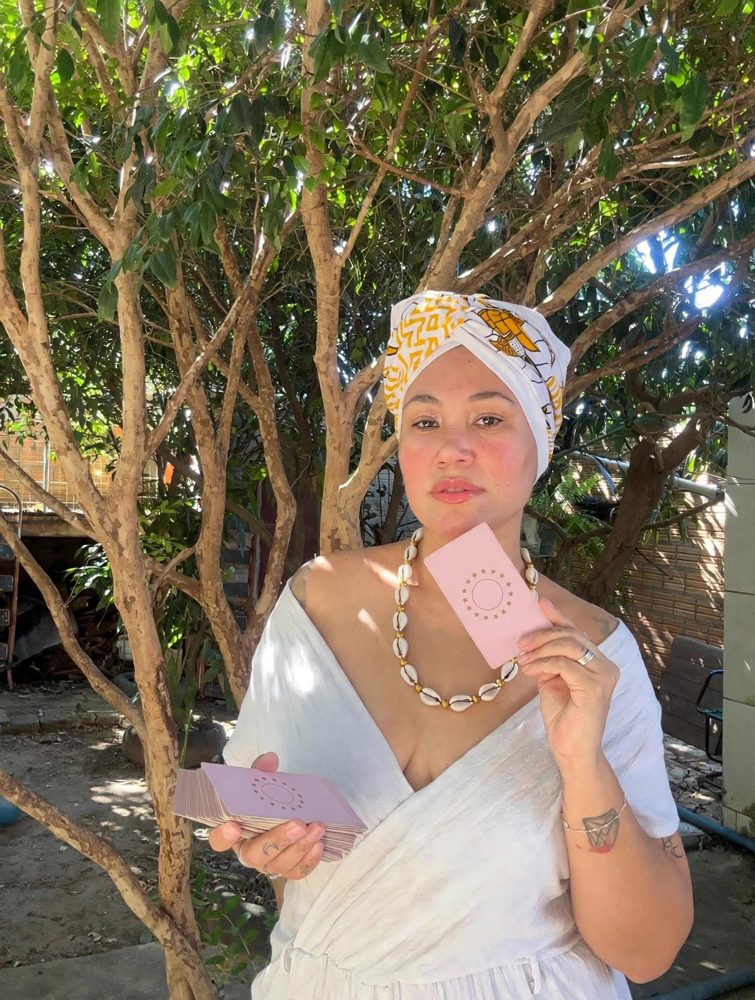

Tiragem geral
Uma leitura simbólica das cartas para refletir sobre o momento atual e as possibilidades que você deseja explorar.
Consultar tiragem ↗Conheça os atendimentos de Katlen Ariane com Baralho Cigano. Consulte as opções de tiragem, esclareça suas dúvidas e veja a disponibilidade para agendar.


Uma tiragem começa com sua pergunta.O Baralho Cigano é utilizado como ferramenta simbólica de interpretação e reflexão sobre temas e situações apresentados durante a consulta.
Antes de agendar, você pode conhecer os formatos de tiragem, consultar valores e entender como funciona o atendimento.
Solicitar informaçõesConheça as opções de consulta com Baralho Cigano e escolha o formato que melhor corresponde à sua dúvida ou intenção.
Uma leitura simbólica das cartas para refletir sobre o momento atual e as possibilidades que você deseja explorar.
Consultar tiragem ↗Consulta simbólica para explorar sentimentos, dinâmicas e perspectivas relacionadas à vida afetiva, sem garantir previsões.
Consultar opções ↗Leitura simbólica para refletir sobre decisões, projetos e caminhos pessoais, preservando sua autonomia nas escolhas.
Saber mais ↗A cartomancia oferece uma interpretação simbólica das cartas. As leituras não garantem acontecimentos ou resultados e não substituem orientação profissional especializada quando necessária.
As opções de atendimento, descrições e valores podem ser atualizados diretamente pelo V8 Admin Universal. Consulte a disponibilidade antes de agendar.
Para consultar as tiragens disponíveis, valores e horários, fale diretamente com Katlen Ariane.
Solicitar informações ↗Quer saber qual tiragem está disponível?
Entre em contatoVeja algumas informações sobre as leituras e como consultar valores e disponibilidade.
Fazer uma perguntaDurante a consulta, as cartas são interpretadas simbolicamente a partir do tema ou pergunta que você deseja explorar. O formato e a duração são informados antes do agendamento.
Use um dos canais de contato desta página para confirmar os valores, os horários e as condições atuais diretamente com Katlen.
Não. A leitura é uma interpretação simbólica e não garante previsões ou resultados. Suas decisões continuam sendo pessoais.
Não. Para consultar valores e horários, basta pedir informações gerais. Compartilhe apenas o que considerar necessário durante o atendimento.
Entre em contato para consultar as tiragens disponíveis, os valores e os horários para atendimento.
Conversar pelo WhatsAppPara iniciar, você pode solicitar apenas informações gerais sobre a consulta. Evite compartilhar dados pessoais desnecessários.